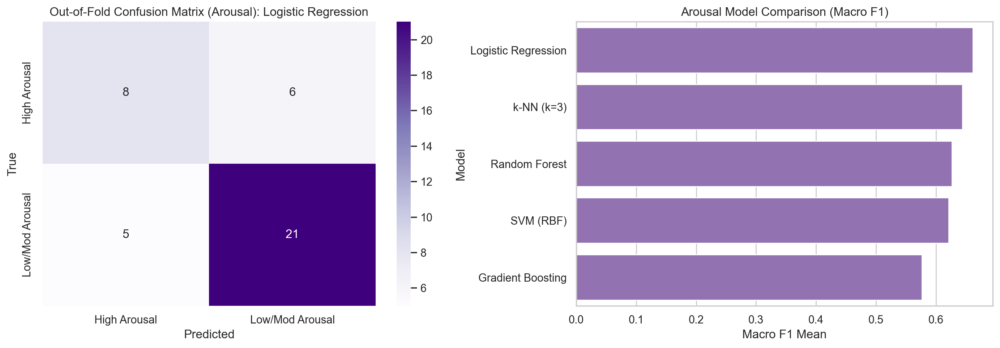
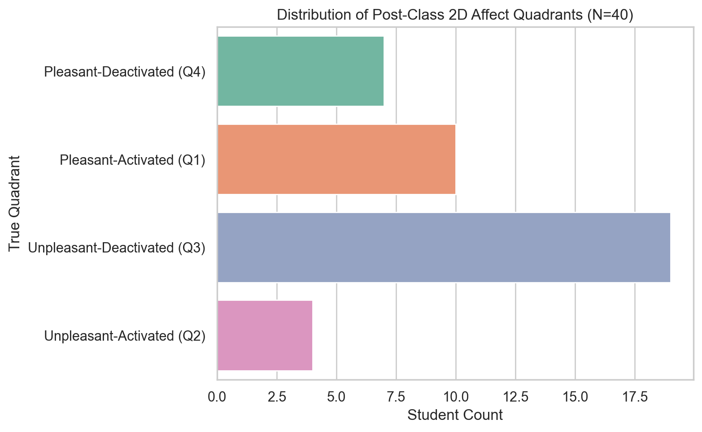

Exploratory results only. The sample contains one year level and one session, and there is no independent external test set.
| Model | Accuracy Mean | Accuracy SD | Balanced Accuracy Mean | Macro F1 Mean | Macro F1 SD | Macro F1 95% CI Half-Width | Macro Precision Mean | Macro Recall Mean |
|---|---|---|---|---|---|---|---|---|
| SVM (RBF) | 0.550 | 0.112 | 0.543 | 0.522 | 0.097 | 0.085 | 0.582 | 0.543 |
| k-NN (k=3) | 0.575 | 0.209 | 0.535 | 0.510 | 0.231 | 0.203 | 0.535 | 0.535 |
| Random Forest | 0.525 | 0.056 | 0.505 | 0.466 | 0.084 | 0.074 | 0.514 | 0.505 |
| Gradient Boosting | 0.500 | 0.198 | 0.485 | 0.442 | 0.220 | 0.193 | 0.427 | 0.485 |
| Logistic Regression | 0.450 | 0.143 | 0.448 | 0.429 | 0.123 | 0.108 | 0.450 | 0.448 |
| Dummy (Most Frequent) | 0.575 | 0.068 | 0.500 | 0.364 | 0.028 | 0.025 | 0.288 | 0.500 |
| precision | recall | f1-score | support | |
|---|---|---|---|---|
| Pleasant | 0.467 | 0.412 | 0.438 | 17.00 |
| Not Pleasant | 0.600 | 0.652 | 0.625 | 23.00 |
| accuracy | 0.550 | 0.550 | 0.550 | 0.55 |
| macro avg | 0.533 | 0.532 | 0.531 | 40.00 |
| weighted avg | 0.543 | 0.550 | 0.545 | 40.00 |
| Model | Accuracy Mean | Accuracy SD | Balanced Accuracy Mean | Macro F1 Mean | Macro F1 SD | Macro Precision Mean | Macro Recall Mean |
|---|---|---|---|---|---|---|---|
| Logistic Regression | 0.725 | 0.163 | 0.670 | 0.662 | 0.222 | 0.691 | 0.670 |
| k-NN (k=3) | 0.725 | 0.105 | 0.657 | 0.644 | 0.183 | 0.681 | 0.657 |
| Random Forest | 0.700 | 0.209 | 0.627 | 0.627 | 0.252 | 0.703 | 0.627 |
| SVM (RBF) | 0.675 | 0.068 | 0.637 | 0.622 | 0.085 | 0.678 | 0.637 |
| Gradient Boosting | 0.600 | 0.240 | 0.590 | 0.577 | 0.238 | 0.603 | 0.590 |
| Dummy (Most Frequent) | 0.650 | 0.056 | 0.500 | 0.393 | 0.020 | 0.325 | 0.500 |
| Affect Quadrant | Count |
|---|---|
| Unpleasant-Deactivated (Q3) | 19 |
| Pleasant-Activated (Q1) | 10 |
| Pleasant-Deactivated (Q4) | 7 |
| Unpleasant-Activated (Q2) | 4 |


